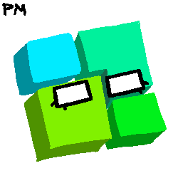
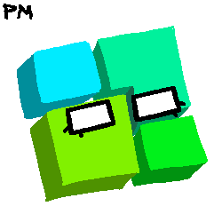

HOME
Hey there, I'm peculiarMirage. Welcome to my site!
I make silly little webcomics and such, so check those out if you'd like.
Hey there, I'm peculiarMirage. Welcome to my site!
I make silly little webcomics and such, so check those out if you'd like.
PAGE STYLING INSPIRED BY MSPFA